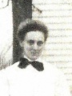

~ The Family of Henry and Anna (Meyerhoff) Troue ~
Anna Meyerhoff was the fifth child of Carl and Emma's union, and the eighth child of Carl overall. She was born June 28, 1888, in Randolph County, IL.
She married Henry Troue (1883-1947) on December 26, 1908, in Wine Hill, IL. They had six children listed below. Anna passed away on June 15, 1963, in Chester,
at the age of 74, after a six-year-long illness.
Heinrich Louis Hermann "Henry" Troue was the fourth of six children of Margarethe Theodosia Heitmann (1849-1925) and Christian Anton Troue (1851-1912).
He was born February 26, 1883, in Wine Hill. He worked as a farmer and passed away on August 5, 1947, in Union County, IL, at the age of 64.
The couple were buried in Saint Peter's Lutheran Cemetery in Wine Hill. Henry was buried on August 6, 1947, and Anna was buried on June 17, 1963.
 Anna (Meyerhoff) Troue
Arthur Christian Heinrich Troue (1909-1922)
Arthur was the first child of Anna and Henry, born October 15, 1909, in Wine Hill. He passed away at the young age of 12 on July 12, 1922. He
was buried in Saint Peter's Lutheran Cemetery.
Harold William Troue (1912-1975)
Harold was the second child of Anna and Henry, born March 12, 1912, in Wine Hill. He married Ida Anna Caroline Elting (1916-2002) on
February 20, 1939, in Perryville, MO. Together they had at least two children, who are both living. They celebrated 36 years of marriage when
Harold passed away on January 24, 1975, in Chester, IL, at the age of 62. Ida passed away 27 years later on July 16, 2002, in Chester, at the age
of 85. They were buried in Paradise Cemetery in Steeleville, IL.
Herbert A. Troue (1916-1988)
Herbert was the third child of Anna and Henry, born October 17, 1916, in Wine Hill. He served in the U.S. Army Air Corps during World War II. On
his return, he married Ethel Meyerhoff (1922-2015)(potentially a very distant relation) on January 20, 1945. Together they had at least two children:
Leslie James Troue (1946-2015) and a living son. They celebrated 43 years of marriage when Herbert passed away on October 4, 1988, in Chester,
at the age of 71. Ethel passed away 26 years later on March 16, 2015, in Perryville, at the age of 92. They were buried in Paradise Cemetery.
Nora D. (Troue) Richelmann (1918-2011)
Nora was the fourth child and only daughter of Anna and Henry, born September 10, 1918, in Percy, IL. She married Paul Louis Richelmann (1919-2004)
on May 20, 1944, at Saint Peter's Lutheran Church in Wine Hill. I have no knowledge of any children. They celebrated 59 years of marriage when Paul passed
away on January 11, 2004, in Chester, at the age of 84. Nora followed him in death seven years later on December 23, 2011, in Chester, at the age of 93.
They were buried in Paradise Cemetery.
Omer John Troue (1922-2001)
Omer was the fifth child and fourth son of Anna and Henry, born June 24, 1922, in Percy. He worked as a farmer and I have no knowledge of any marriages. He
passed away on June 7, 2001, in St. Louis, MO, at the age of 78. He was buried in Saint Peter's Lutheran Cemetery in Wine Hill.
Elmer Louis Troue (1925-1975)
Elmer was the sixth and last child and fifth son of Anna and Henry, born February 28, 1925, in Wine Hill. He was married on May 24, 1952, in West Point, IL,
to his living wife. Together they had at least two children, who are both living. They celebrated 23 years of marriage when Elmer passed away on
June 25, 1975, in Percy, after a one-month illness. He was buried in Paradise Cemetery.